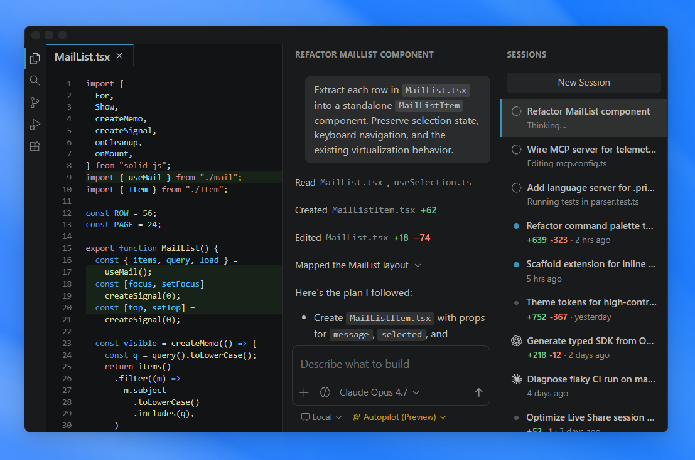
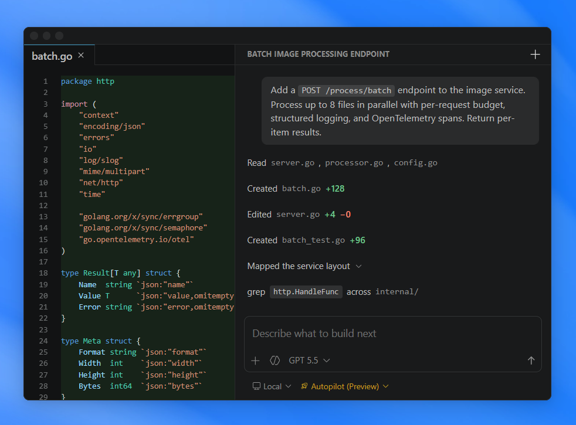
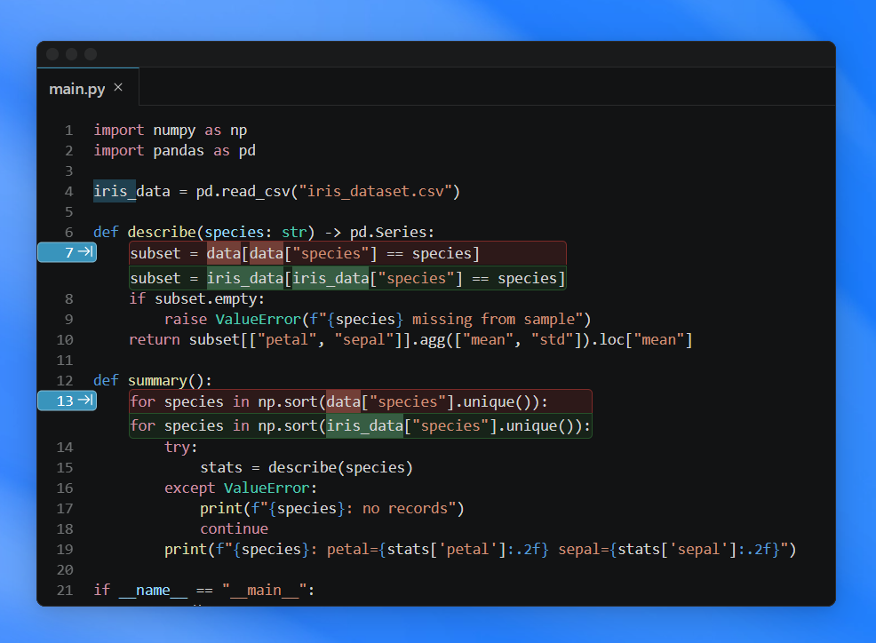

Visual Studio Code
.png)
Search
Ctrl+Shift+P

Search
Ctrl+Shift+P
Web, Insiders edition or other platforms
By using VS Code, you agree to its license and privacy statement.

Hand off tasks to AI agents that autonomously plan, make code changes, run commands, and iterate until the job is done.
For example, assign a CLI-based agent to triage and fix bugs in the background, interact with another agent to implement a feature using live validation in the integrated browser, and delegate a homepage redesign to a cloud agent that opens a pull request for your team to review.

Use the agent harness that fits your workflow. Run agents locally or in the cloud, with Copilot or third-party providers like Claude and OpenAI.
Choose from dozens of models across providers, from fast completion models to advanced reasoning models. Or bring your own key to use any model from any provider.
Stay productive while multiple agents work on tasks in parallel. Track all your agent sessions from a single view, regardless of where they run.
Quickly filter and monitor sessions, or dive into an individual agent interaction, without switching to a different tool or terminal.
Ensure agents follow your practices and team workflows. Define custom instructions, add agent skills, or build custom agents tailored to your project.
Connect to external tools and services with MCP servers, or install agent plugins or extensions to expand the agent's capabilities.
VS Code has been the editor of choice for millions of developers for over a decade. AI-powered inline suggestions, intelligent completions, and a rich editing experience make it just as powerful when you're writing code yourself.
Seamlessly switch between working with agents and hands-on coding, all within the same editor.
